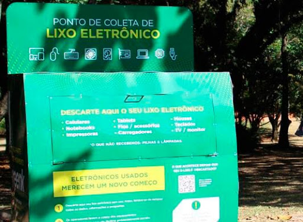

Principais pontos de coleta de lixo eletrônico
A associação chamada de Weee Forum separou um dia para conscientizar as pessoas sobre um problema muito moderno: o do lixo eletrônico. Embora ainda seja uma questão pouco discutida por aqui, o Brasil aparece como sétimo maior produtor de lixo eletrônico no mundo.
Em São Paulo, os pontos de coleta estão localizados nas seguintes regiões:
- Parque Ibirapuera – Av. Pedro Álvares Cabral, s/n – Portão 3
- Parque Trianon – Rua Peixoto Gomide, 949
- Parque Prefeito Mario Covas – Avenida Paulista, 1853
- Parque da Independência – Avenida Nazareth, s/n
- Parque do Chuvisco – Rua Ipiranga, 792 – Jd. Aeroporto
- Parque Lina e Paulo Raia – Rua Volkswagen, s/n
- Parque Buenos Aires - Av Angélica, 1.500
- Parque do Povo – Av. Henrique Chamma, 420
- Parque da Aclimação – Rua Muniz de Souza, 1.119
- Parque Burle Marx – Av. D Helena Pereira de Moraes, 200
- Parque Piqueri – R. Tuiuti, 515
- Parque do Carmo – Av. Afonso de Sampaio e Sousa, 951 - Itaquera
- Parque Vila Guilherme /Trote – Rua São Quirino, 905
- Sede da Prefeitura de São Paulo – Viaduto do Chá, 15 – Centro
- Prédio da Secretaria do Verde e do Meio Ambiente – Rua do Paraíso, 387
Caso você queira adicionar os pontos via Google Maps, há uma lista já pronta, montada pelo Movimento Greenk.